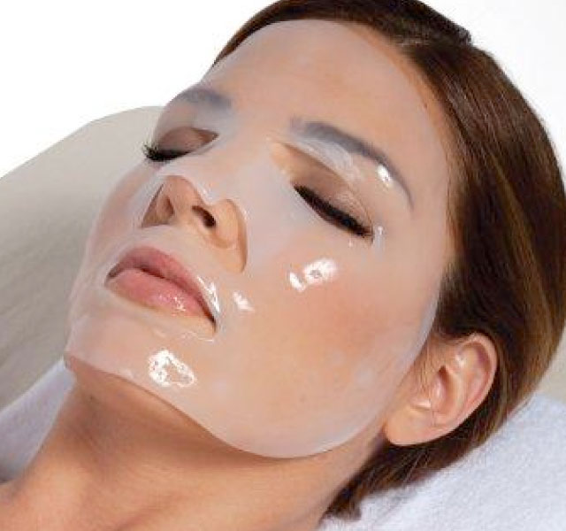
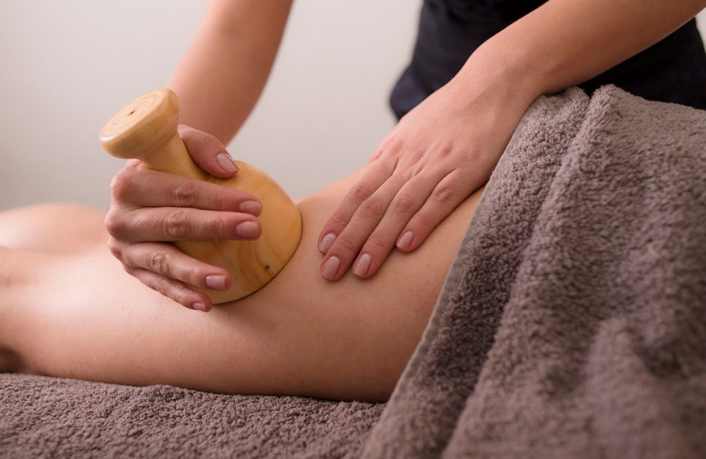
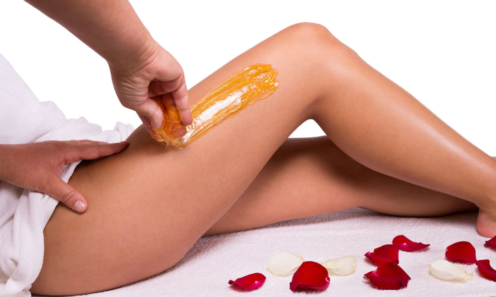
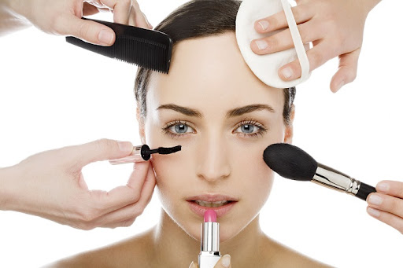
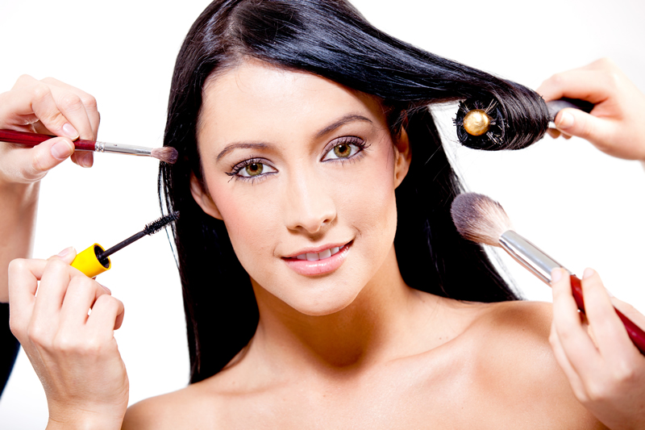

Tratamientos cosméticos faciales
EL tratamientos com (mascarillas regeneradoras) manuales o con aparatología facial ayuda a combatir las secuelas del paso del tiempo.
leer masTratamientos Corporales para afirmar y moldear el cuerpo
El poder eliminar los depósitos de tejidos adiposos, que mientras más grandes son más afectan la imagen de la persona, es una de las principales metas cuando el reflejo en el espejo ya no es agradable.Por lo que hoy en día hay tratamientos reductivos como DLM y Madero terapia que no son invasivos, además para la celulitis, flacidez, estrías, entre otros.
leer masDepilación (Métodos no invasivos)
Procesos para eliminar vello de distintas zonas del cuerpo, utilizando cera corporal y facial, depilaciones eléctricas, laser (eliminación definitiva del vello)
leer masMasajes

Técnicas que brindan beneficios físicos y emocionales. Con aromaterapia aceites esenciales que ayudan a disminuir tenciones y estrés a los pacientes, entre los que pueden ser Terapéuticos, Relajantes y Reductivos
leer masMaquillaje facial y corpora
Decorativo (no invasivo), artístico, naturales e intensos, para diversas ocasiones
leer masUso de Aparatología Estética

Muchas maquinas que había desde hace muchos años, y que en la época moderna se han actualizado y con nanotecnología en algunos casos, como Carboxiterapia, alta frecuencia, ultrasonido, ultracavitación, ozonoterapia, gimnasia pasiva, entre otros
leer masManicura y Pedicura

Técnicas de limpieza, exfoliación, masaje, diseño y color en las uñas de manos y pies reflejando buena imagen y bienestar personal
leer masAsesoría de Imagen
Un Centro Estético al ser Integral puede ofrecer servicios adicionales de cambio de look o imagen con el fin de que la persona encuentre todos los servicios en un solo establecimiento, incluyendo asesoría de imagen completa y menús nutricionales para mantener su salud y su figura.
leer mas s